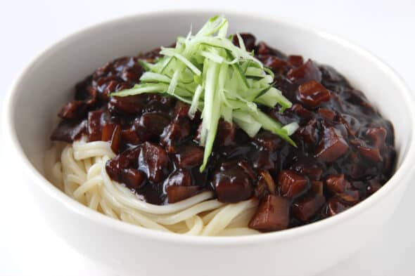

Jajangmyeon!

Jajangmyeon (짜장면)—also called jjajangmyeon zha jiang mian—is a Korean noodle dish consisting of a rich,
dark sauce made from black bean paste (also known as chunjang and jjajang), and poured over fresh noodles.
Chefs and home cooks often add pan-fried pork and stir-fry vegetables to the dish.
This Chinese-Korean fusion dish, which immigrants from the Shandong region of China brought to Korea in the
early twentieth century, is now a staple at Chinese restaurants across South Korea. The name “jajangmyeon”
(sometimes spelled jjajangmyeon) comes from the Chinese word “zhájiàng,” meaning “fried sauce,” and “myeon”
meaning “noodles.”
Ingredients
For the meat:
- 250g pork shoulder
- 1 tbsp of mirin
- 1 tbsp of soy sauce
- 3 tbsp of vegetable oil
- 1 tsp of ginger
- 1 garlic clove
- Black pepper to taste
For the sauce:
- 24 tbsp of chanjung (Korean black bean paste)/li>
- 3 tbsp of vegetable oil
- 1½ tbsp of brown sugar/li>
- 2 tbsp of rice wine
For the assembley:
- 4 cuos of fresh Jajangmyeon noodles, or udon noodles
- 1 large onion, diced
- 1 zucchhini, chopped
- 1½ cups of chicken stock
- 2 tbsp of potato starch, dissovled in 1/4 cup of water
- 1 small cucumber, sliced for garnish
Method
- Pat the pork shoulder dry with a paper towel, and slice it into ½-inch cubes.
- In a large bowl, whisk together the mirin, soy sauce, 1 tablespoon of vegetable oil,
ginger, garlic, and pepper. Add the cubed pork to the bowl and stir to coat.
Allow the pork to marinate at room temperature for 10–15 minutes.
- Make the jjajangbap sauce in a small bowl. In a small saucepan over medium heat,
combine the black bean paste, vegetable oil, brown sugar, and rice wine.
- Stirring frequently, cook the sauce until slightly thick, about 3 minutes.
Remove the pan from the heat, and set it aside.
- Cook the meat. In a large frying pan over medium-high heat, add the remaining 2 tablespoons of vegetable oil.
- When the oil is hot, add the marinated pork to the pan and cook until the meat is no longer pink, 3–4 minutes.
- In the meantime, bring a large pot of cold water to a boil. Add the noodles to the hot water and boil until cooked,
about 3–4 minutes. Drain and set aside.
- Add the onion and zucchini to the pan with the pork and cook until the vegetables have softened slightly, 2–3 minutes.
- Add the cabbage to the pan and cook until it softens, about 2 minutes.
- Add the black bean paste mixture to the pan and stir to coat the meat and vegetables in the sauce.
- Pour the chicken stock and cornstarch slurry into the pan and stir to incorporate.
- Stirring occasionally, cook until the sauce has thickened up to your liking, about 2–4 minutes. Remove the pan from the heat.
- Divide the noodles into 4 serving bowls. Top each bowl of noodles with a ¼ of the saucy meat
and vegetable mixture and garnish with thinly sliced cucumbers before serving.